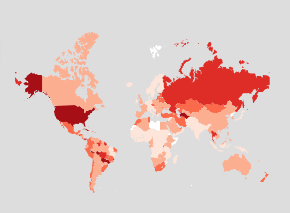

Prisões são lembradas apenas quando há motins, massacres e fugas em massa. Do contrário, a mídia, as instâncias de poder, e mesmo o público em geral, não estão interessados em saber o que se passa no interior dos estabelecimentos prisionais. As celas insalubres, em que se apertam dezenas de pessoas expostas a todos os tipos de violações de direitos, não incomodam. Isso porque, presos fazem parte do grupo das minorias indesejadas. Assim era no período da ditadura e assim continua sendo até hoje.
A recomendação da CNV
Ao concluir os seus trabalhos, a Comissão Nacional da Verdade (CNV) apresentou uma recomendação voltada à “Dignificação do sistema prisional e do tratamento dado ao preso” – a Recomendação 12. Esta foi elaborada em um contexto de encarceramentos em massa, piora no tratamento recebido pelos presos, além de constantes rebeliões e mortes nos presídios e outras instituições de privação de liberdade.
Ao chamar a atenção para a necessidade urgente de tornar digno o sistema prisional, a CNV provocou uma série de perguntas:
- É possível transformar as prisões em lugares habitáveis, em que os direitos das pessoas que lá se encontram sejam respeitados?
- Qual o benefício obtido com a manutenção de pessoas segregadas por um longo tempo?
- A prisão é mesmo um lugar em que as pessoas encontram oportunidade para transformar suas vidas?
Paralelamente à Recomendação 12, a CNV, tornou público um breve diagnóstico do sistema penitenciário no país. Nesta análise, evidencia-se a situação de profundo desrespeito aos direitos humanos que caracteriza as unidades prisionais brasileiras, nas quais sobressaem as superlotações. Entre outras conclusões, a CNV ressaltou que as superlotações podem ser explicadas pela ausência de políticas de penas e punições alternativas e, ainda, de políticas voltadas para a reintegração social dos presos.
Já há alguns anos, o abandono da população carcerária por parte do Estado vem sendo apontado por órgãos nacionais e internacionais de proteção aos direitos humanos. E tal situação não é encontrada apenas nos presídios, mas também em instituições destinadas ao acolhimento de crianças e adolescentes infratores. Portanto, um primeiro aspecto que pode contribuir para tornar o sistema prisional mais digno é o enfrentamento do abandono, e da exclusão social, em que vivem as populações carcerárias ou em de privação de liberdade.
A CNV também expressou a necessidade de acabarem com as revistas vexatórias, ou os procedimentos invasivos, humilhantes e violentos de revistas a que são submetidos os familiares e outras pessoas que vão visitar os presos. Muitas vezes, nestas ocasiões, os visitantes de ambos os sexos são obrigados a ficar nus e têm os órgãos genitais inspecionados. Embora a lei 13.271, de 18 de abril de 2016, tenha proibido a revista íntima de pessoas do sexo feminino – visitantes ou funcionárias – nos presídios, multiplicam-se as denúncias de que a prática segue ocorrendo nos presídios brasileiros.
Outro aspecto analisado pela CNV refere-se ao problema da crescente privatização pela qual tem passado o sistema penitenciário brasileiro A conclusão, nesse caso, é de que a dignificação dos presídios e o respeito aos direitos humanos nessas instituições só poderão ser garantidos se o poder punitivo for de exclusividade do Estado, e não transferido a instituições privadas.
Para que possamos entender melhor o porquê da situação deplorável a que chegou o sistema carcerário no Brasil é preciso compreender os fins a que serviram muitas unidades prisionais durante a ditadura militar e a quais objetivos servem na transição democrática. Assim, veremos que as prisões não apenas têm violado sistematicamente os direitos humanos, mas também têm servido, ao longo de nossa história, para a reprodução da exclusão social e para o encarceramento de populações que são consideradas sem importância, ou indesejadas, pela sociedade brasileira.
Prisões: origens, ditadura e transição democrática
A origem das prisões e a razão de sua existência
A punição por crimes sempre existiu na história da humanidade, mas a prisão como forma de punição é uma realidade relativamente recente, data de menos de 200 anos atrás. Até o início do século XIX, as prisões eram locais destinados à contenção temporária de pessoas que aguardavam a sentença definitiva ou a execução de suas penas.
As prisões, tal qual as entendemos hoje, ou seja, como edificações amplas, altamente protegidas, para segregar pessoas no cumprimento da pena de privação da liberdade, passaram a ser utilizadas a partir de 1821 – quando foi instituída a Penitenciária da Filadélfia (Eastern State Penitentiary ou Cherry Hill). Antes, presos provisórios e condenados eram abrigados em casas de correção, as quais, como o próprio nome indica, eram locais cuja aparência se assemelhava a residências.
O uso da prisão como resposta ao crime se baseou em crenças na racionalidade das penas, na possibilidade de recuperação dos criminosos, e no desejo de se por um fim ao arbítrio. Por exemplo, enquanto em uma cidade um furto poderia custar a vida de uma pessoa, na cidade vizinha gerava apenas a obrigação de devolver o bem subtraído. Nesse cenário, um grupo de pensadores defendia o fim das penas cruéis e a prisão parecia a melhor solução para o problema; já outro grupo via a prisão como um lugar em que a pessoa pudesse se transformar em alguém útil para a sociedade.
No entanto, a principal razão para instituir as prisões, como locais para segregação de uma grande quantidade de pessoas, resultou do medo que imperava nos Estados Unidos, provocado por rápidas transformações sociais. Vivia-se uma época de rompimento com as concepções tradicionais de religião e de família, as quais se juntavam a afirmação das liberdades individuais e os crescentes conflitos sociais.
Assim, as prisões – de fato – não surgiram da real necessidade de se reduzir a criminalidade, e nem como uma resposta ao crime. Mas da tentativa dos governos de aplacar o medo da desordem social e afastar do convívio das “pessoas de bem” todos aqueles cujo comportamento ameaçava as formas tradicionais de vida em sociedade.
No entanto, o sistema prisional não tem cumprido com as expectativas criadas em torno dele, como a ressocialização ou a redução da criminalidade. Ao contrário, transformou-se num espaço gerador de crimes, de tortura, de condições de permanência sub-humanas, entre outras formas de violações. Mesmo assim, a sociedade tem se recusado a substituir as prisões por outras formas de resolução de conflitos menos violentas.
No Brasil o quadro não tem sido muito diferente. Logo após a inauguração das grandes penitenciárias nos Estados Unidos, e mais tarde na Irlanda, o país enviou representantes para conhecê-las e importar – sem críticas – os modelos adotados. Ao inaugurar a Casa de Correção do Rio de Janeiro, em 1850, por exemplo, estabeleceu o mesmo sistema de segregação, mas preferiu manter o nome “Casa de Correção”. Essa convivência de velhas e novas práticas irá marcar as prisões brasileiras ao longo da história.
As prisões na ditadura
Até o início da ditadura militar de 1964, não havia um número muito grande de penitenciárias e o principal uso destas era para a privação da liberdade. Durante o período ditatorial, as prisões também passaram a ser utilizadas como locais de tortura contra os opositores políticos. Embora presente em períodos anteriores, o uso da tortura de forma sistemática, cotidiana, e sob patrocínio do governo, é uma marca da ditadura.
O regime ditatorial perseguia e encarcerava os chamados subversivos – aqueles que se opunham ao regime, ou que tinham pontos de vista políticos que eram considerados “ameaçadores” à ordem pública. Para tanto, montou-se uma estrutura repressiva que, em parte, estava formada por centros legais e ilegais de detenção, por “setores de inteligência” que deveriam obter informações dos presos lançando mão de métodos cruéis de tortura e, também, por grupos que simplesmente eliminavam figuras consideradas como opositores, “subversivos” ou indesejáveis.
Toda essa máquina repressiva e as prisões de subversivos tinham a função de retirar da sociedade as pessoas que agissem, pensassem e se expressassem de maneiras consideradas perigosas para a ordem estabelecida, e também visavam provocar os mais distintos medos e terrores nos opositores políticos. Ambas as funções buscavam eliminar qualquer oposição à ordem que ameaçasse a existência do regime, de maneira direta ou indireta.
Na década de 1970, em São Paulo, por exemplo, um grupo de policiais civis, conhecido como “Esquadrão da Morte” – liderado pelo famigerado delegado Fleury -torturava e executava presos políticos. Mas, as prisões seguidas de torturas, mortes e desaparecimentos não se restringiam aos opositores políticos. Elas se estenderam aos presos comuns. O Esquadrão da Morte, articulado com grupos de traficantes e comerciantes, também retirava presos comuns do Presídio Tiradentes para executá-los e abandoná-los em locais ermos ou valas comuns. Eliminava-se, assim, as pessoas consideradas perigosas para os “negócios”.
Prisão e transição democrática
A abertura democrática foi um período de muitas tensões também para o sistema penitenciário. Durante o governo Franco Montoro (PMDB), eleito governador do estado de São Paulo, em 1982, o secretário de Justiça do estado, José Carlos Dias, apresentou um projeto de humanização das prisões. Entre outras propostas do projeto estava a abertura para o diálogo com a comunidade prisional, por meio da criação das comissões de solidariedade. O projeto do secretário Dias foi veementemente atacado pela imprensa e boicotado por agentes penitenciários que discordavam de suas propostas. José Carlos Dias não conseguiu levar o projeto adiante e a administração prisional interrompeu qualquer forma de diálogo coletivo com os presos.
O sucessor de Montoro, Orestes Quércia (PMDB), juntamente com seu secretário de Segurança e sucessor, Luiz Antônio Fleury Filho (PMDB), construíram várias unidades prisionais pelo Estado. Em vez de apostar na tentativa de diálogo, como Franco Montoro e José Carlos Dias, passaram a usar a Polícia Militar para intervir nas crises prisionais. O resultado foi desastroso. As rebeliões e reivindicações de presos passaram a ser sufocadas com violência e mortes.
O auge dessas intervenções foi o Massacre do Carandiru, quando a Polícia Militar, liderada pela ROTA, ingressou na Casa de Detenção, em 02 de outubro de 1992 e executou 111 presos.
A partir de então, os presos começaram a se articular para resistir às investidas violentas do governo, sendo que um grupo deles formou o Primeiro Comando da Capital (PCC), que talvez seja a o principal organização de presos do mundo.
Para saber mais:
FARIA, C. DURA LEX, SED LEX. A LUTA PELO RECONHECIMENTO DOS PRESOS POLÍTICOS NO BRASIL (1969-1979). [S.l.]: http://www.historica.arquivoestado.sp.gov.br/materias/anteriores/edicao33/materia05/texto05.pdf, 2008.
SALLA, F. “De Montoro a Lembo: as políticas penitenciárias em São Paulo”. [S.l.]: http://www.nevusp.org/downloads/down157.pdf, 2007.
TEIXEIRA, A. Do sujeito de direito ao estado de exceção: o percurso contemporâneo do sistema penitenciário brasileiro. [S.l.]: http://portal.anpocs.org/portal/index.php?option=com_docman&task=doc_view&gid=2820&Itemid=231, 2007.
O Massacre do Carandiru e a origem do Primeiro Comando da Capital
Dois projetos políticos penitenciários confrontaram-se durante o período da transição democrática. Um deles propunha o diálogo e a criação de canais de comunicação entre a prisão e a sociedade. Este projeto era representado por setores sociais mais progressistas, e foi proposto durante o governo de Franco Montoro.
O outro projeto, defendido por setores mais conservadores, alinhados com o governador Orestes Quércia e seu secretário de Segurança, Luis Antônio Fleury Filho, partia do pressuposto de que a questão prisional era apenas caso de polícia, ou seja, as crises no sistema prisional deveriam ser geridas por meio da intervenção violenta da Policial Militar.
Em 1991, ao suceder Quércia no governo do Estado de São Paulo, Fleury Filho, intensificou esse intervencionismo militar nas unidades prisionais e transferiu a administração prisional da Secretaria de Justiça para a Segurança Pública.
Essa política provocou uma escalada da violência policial nas ruas e nas prisões. Com Fleury no governo, a Polícia Militar matou civis em um crescendo sem precedentes, especialmente entre 1991 e 1992, como mostra o quadro abaixo. Em 1989, 18 presos morreram asfixiados no 42º Distrito Policial. Essas mortes foram um prenúncio do que estava por vir: o Massacre do Carandiru.
Há várias e distintas versões para o massacre que ocorreu no dia 02 de outubro de 1992, no presídio do Carandiru, em São Paulo. Muitas delas insistem que a confusão no presídio teve início com uma briga trivial entre dois presos, conhecidos como Barba e Coelho, no Pavilhão 9. Grupos rivais se aproveitaram da confusão para realizar um acerto de contas e, por volta das 14 horas, alguns feridos foram levados para a enfermaria, no Pavilhão 4. Pouco depois, a situação já estava totalmente fora de controle e os agentes penitenciários abandonaram o pavilhão que estava tomado. Anunciava-se, assim, uma rebelião, com os presos ateando fogo em colchões e em outros objetos. O diretor do presídio, José Ismael Feitosa, pediu reforço policial e, em alguns minutos, o Comandante do Policiamento Metropolitano, coronel Ubiratan Guimarães, chegou ao complexo prisional. Por ordem do secretário estadual de Segurança Pública, Pedro Franco de Campos – que deixaria o cargo menos de um mês depois do ocorrido -, o coronel Ubiratan assumiu a situação.
Por volta de 16hs30, o Coronel Ubiratan ordenou a invasão do Pavilhão 9 e a ROTA (Rondas Ostensivas Tobias de Aguiar) – tropa conhecida por sua alta letalidade – à frente de outras tropas da Policia Militar, como o COE (Comando de Operações) e o Gate (Grupo de Ações Táticas Especiais), entrou no local. Segundo a versão da polícia, os polícias foram recebidos por presos, que estavam protegidos atrás de uma barricada e armados com estiletes, facões e armas – embora nunca tenha sido provado que as armas pertenciam ou foram usadas pelos presos. De acordo com algumas versões da defesa dos presos, estes já haviam se rendido antes da invasão, sendo que os facões e outras armas tinham sido jogados pela janela para sinalizar a rendição. Nesse caso, registra-se que os presos estavam aglutinados e desarmados nas celas quando a ROTA entrou e liderou a execução. O laudo da perícia concluiu que aproximadamente 70% dos disparos haviam atingido as regiões da cabeça e do tórax das vítimas – o que confirma a tese de extermínio e não de enfrentamento.
Minutos após a invasão, a polícia abandonou o presídio levando feridos. Aqueles que sobreviveram à invasão receberam ordens para sair de suas celas e descerem nus para o pátio do pavilhão, onde ficaram, por diversas horas, sentados de cabeça abaixada para que não reconhecessem os policiais. Também foram obrigados pelos policias a carregarem os cadáveres dos presos mortos para o primeiro andar do pavilhão. Há relatos de outras execuções de presos durante a realização dessas duas ações ordenadas pelos policiais. Os números oficiais dão conta de 111 presos assassinados, mas há denúncias da existência de muitas outras mortes que não foram contabilizadas.
Nesse massacre, verdadeiro extermínio, que é muitas vezes justificado como enfrentamento necessário a rebelião que estava em curso, nenhum policial saiu morto ou ferido.
Como as mortes ocorreram às vésperas das eleições municipais, o governo só divulgou que havia mais de cem mortos no dia seguinte, alguns minutos antes da conclusão da votação. A notícia de que ao menos 111 pessoas haviam sido assassinadas pela Polícia Militar, repercutiu imediatamente. Grande parte da sociedade brasileira, entre os quais formadores de opinião e jornalistas, condenou os atos do governo que culminaram com o massacre e a comunidade internacional exigiu explicações.
Mais de 80% dos mortos estavam aguardando julgamento, ou seja, eram formalmente inocentes e muitos outros eram réus primários.
A invasão dos policiais no Carandiru contou com a anuência dos juízes que estavam presentes no local. A entrada foi autorizada pelo Governo de São Paulo, mas o governador, o seu vice, e o secretário de Segurança Pública, Pedro Franco de Campos, jamais foram responsabilizados. No entanto, eles sempre argumentaram para se eximir de responsabilidade pelo massacre, que houve um rompimento da cadeia de comando, gerada por incidente ocorrido com o protagonista dos atos, o coronel Ubiratan Guimarães, comandante do policiamento metropolitano à época e líder da invasão.
Somente vinte anos mais tarde, entre 2013 e 2015, é que 74 policiais foram condenados por júri popular pelas mortes. Tal condenação se deu, em larga medida, em resposta à incessante e insistente luta de defensores de direitos humanos para que houvesse justiça. No entanto, em 2016, o Tribunal de Justiça (TJ) anulou o processo, e um dos desembargadores chegou a declarar que, por ele, os réus policiais seriam absolvidos.
Em 2002, o coronel Ubiratan Guimarães foi eleito deputado federal utilizando o número 111, em alusão às mortes. Esses fatos confirmam a percepção daqueles que veem no Brasil uma sociedade dividida entre os que apoiam a tortura e as violações de direitos humanos, especialmente contra populações vulneráveis, os que são indiferentes, e os que lutam para que essas violações nunca mais aconteçam.
O Massacre do Carandiru acelerou a reação de lideranças entre os presos, que passaram a se articular para fazer frente às constantes investidas violentas da Polícia. Em 1993, algumas dessas lideranças formaram um grupo denominado Primeiro Comando da Capital (PCC), que iria crescer ao longo dos anos e expandir sua influência sobre a massa prisional. Em 2001, ele mostrou sua força pela primeira vez ao coordenar uma rebelião simultânea em 29 unidades prisionais de São Paulo. Em maio de 2006, o evento se repetiu de forma mais violenta: 74 unidades prisionais entraram em rebelião simultaneamente, resultando na morte de vários presos e de mais de trinta agentes públicos, entre agentes penitenciários e policiais.
A reação da polícia nos dias seguintes foi aterradora. Sem preparo algum e agindo com irracionalidade, os policiais saíram às ruas executando centenas de jovens na periferia. Atrás de si ficaram mais de 500 mortos. As mães que perderam seus filhos iniciaram um movimento, batizado de “Mães de Maio”, em referência ao movimento com a mesma denominação na Argentina, formado por mães que perderam seus filhos durante a ditadura civil-militar.
As mortes cometidas pelos policiais, tanto em 1992, quanto em 2006, permanecem impunes. O Ministério Público solicitou arquivamento de praticamente todos os casos de 2006 e somente um policial foi condenado até hoje. O movimento “Mães de Maio” segue em sua luta contra a impunidade.
Para saber mais:
Filme: Carandiru. [S.l.]: https://www.youtube.com/watch?v=Jo2k2Vi9mxE, [S.d.].
Memória Massacre Carandiru. [S.l.]: http://www.massacrecarandiru.org.br/, [S.d.].
FARIA, C. Dura Lex, Sed Lex. A lUTA pelo reconhecimento dos presos políticos no Brasil (1969-1979). [S.l.]: http://www.historica.arquivoestado.sp.gov.br/materias/anteriores/edicao33/materia05/texto05.pdf, 2008.
SALLA, F. “De Montoro a Lembo: as políticas penitenciárias em São Paulo”. [S.l.]: http://www.nevusp.org/downloads/down157.pdf, 2007.
TEIXEIRA, A. Do sujeito de direito ao estado de exceção: o percurso contemporâneo do sistema penitenciário brasileiro. [S.l.]: http://portal.anpocs.org/portal/index.php?option=com_docman&task=doc_view&gid=2820&Itemid=231, 2007.
CALDEIRA, T. P. do R. Cidade de muros: crime, segregação e cidadania em São Paulo. Tradução. [S.l.]: Editora 34, 2000.
NUNES, S. B. Bandido bom é bandido morto: a opção ideológico-institucional da política de segurança pública na manutenção de padrões de atuação violentos da polícia militar paulista. [S.l.]: http://bibliotecadigital.fgv.br/dspace/bitstream/handle/10438/11546/ DISSERTACAO-VERSAOCORRIGIDA-SAMIRABUENONUNES.pdf?sequence=1, 2014.
Encarceramento em massa e política de drogas
Encarceramento no Brasil em comparação com o mundo
O número de presos no Brasil tem crescido vertiginosamente, como mostram os dados do Gráfico 2. Ele registra o crescimento da população prisional nas últimas décadas (em azul) e, também o número de homicídios (em vermelho, no mesmo período. É fácil concluir que o encarceramento em massa não se teve reflexo na redução dos homicídios.
O Brasil é um dos países que mais encarcera no mundo. Está em quarto lugar em números absolutos, ficando atrás somente dos Estados Unidos, da China e da Rússia. Mas o Brasil não é bloco monolítico. Ao contrário, quando o tema é o encarceramento, as diferenças entre os estados são tão gritantes, que se cada um deles fosse um país, o pequeno estado de Rondônia ocuparia o segundo lugar do mundo em número de presos, ficando atrás somente dos Estados Unidos, enquanto que o Maranhão estaria no 150º lugar. O mapa abaixo ilustra isso:
Mapa 1 – Mapa interativo do Brasil e do Mundo sobre as taxas de encarceramento (clique para abrir).

Países europeus muito desenvolvidos apresentam taxas baixas de encarceramento. A provável causa disso está no fato de que esses países foram capazes de encontrar soluções alternativas aos aprisionamentos, como as penas alternativas, que são muito usadas, em especial no norte europeu. Por outro lado, países africanos muito pobres encarceram pouco também. A razão disso é que o custo de construção e manutenção das prisões é muito alto. Além disso, em muitos países da África e da Ásia, meios de justiça mais informais, ou de punição direta, como linchamentos e execuções extrajudiciais, prevalecem na resposta ao crime.
Já os Estados Unidos, a Rússia e o Brasil são altamente punitivos. A China é outro país, de dimensão continental e alta densidade populacional, que provavelmente encarcera bastante, mas como subnotifica suas taxas de encarceramento, ela não figura entre os países mais punitivos. A China não revela, por exemplo, quantos presos provisórios administrativos mantêm em seus estabelecimentos prisionais.
Observando-se somente o mapa do Brasil, nota-se que alguns estados encarceram excessivamente. Isso se deve especialmente à política de guerra contra as drogas e seus usuários, que alguns estados têm travado.
A guerra contra as drogas e seus efeitos sobre o encarceramento em massa
A melhor forma de entender porque alguns estados brasileiros encarceram muito é observar os estados mais ao oeste no Brasil, principalmente aqueles próximos dos países produtores de cocaína, são os que mais prendem. No mapa seguinte é possível conferir essa informação com mais detalhes. Há cerca de 10 anos, o percentual de presos por drogas não passava de 10%, hoje é de quase 30%. Em alguns estados, esta cifra ultrapassa os 40%, chegando a mais de 50% dos presos, como no caso do estado do Mato Grosso.
Mapa 2 – Mapa do encarceramento por drogas no Brasil. (clique para abrir)

Superando a guerra às drogas: descriminalização
Se durante a ditadura, a guerra foi declarada contra os opositores políticos, na democracia, o aparelho repressor do Estado elegeu outros inimigos: os pobres da periferia que dependem de fontes informais de renda, como o varejo de drogas para sobreviver. A política de guerra às drogas tem afetado especialmente essa população, que vende em pequenas quantidades e, ao mesmo tempo, consome a droga.
Mulheres na condição de únicas provedoras da família figuram entre as principais vítimas dessa guerra. Tanto é assim que, nos estados que apresentam um alto encarceramento por drogas, as mulheres também estão mais representadas, chegando a 11% da população presa. Em estados em que a política de guerras às drogas não é tão acentuada, este percentual cai para cerca de 3%.
A superação desse problema está na descriminalização do porte e do pequeno tráfico de drogas. Os recursos gastos hoje para encarcerar poderiam ser utilizados, por exemplo, para aprimorar as políticas públicas de saúde relacionadas às drogas. Atualmente, se um dependente quer se livrar da prisão, tem de recorrer a internações em instituições religiosas, nem sempre qualificadas para oferecer a melhor resposta ao problema.
Para saber mais:
Para entender como a questão das drogas tem se configurado como um problema nas últimas décadas, há dois filmes que vale a pena assistir: “Scarface” (1983), com Al Pacino, e “Cocaine Cowboys” (2006). Os filmes mostram a transformação da cidade de Miami, nos Estados Unidos com a entrada das drogas. O primeiro, Scarface, é um filme de ficção; o segundo, um excelente documentário.
Além disso, segue um bom texto a ser lido a respeito do assunto:
RODRIGUES, THIAGO M. S. A infindável guerra americana: Brasil, EUA e o narcotráfico no continente. São Paulo Perspec, São Paulo , v. 16, n. 2, p. 102-111, June 2002 . Disponível em http://www.scielo.br/scielo.php?script=sci_arttext&pid=S0102-88392002000200012&lng=en&nrm=iso – acessado em 11 Oct. 2016.
Quem está preso no Brasil: seletividade penal e sistema penitenciário
As tabelas abaixo permitem uma interação com os dados que indicam, com clareza, o perfil de exclusão e vulnerabilidade social dos presos. Eles estão entre os menos alfabetizados, são jovens e negros. Infelizmente, mulheres aparecem cada vez mais representadas no percentual de pessoas encarceradas. Devido à guerra às drogas, alguns estados, como Rondônia, simplesmente prendem mais do que são capazes de abrigar. Isso termina por intensificar as tensões nas prisões, com consequências graves, tais como as mortes, rebeliões e fugas em massa que temos acompanhado.
Repete-se, com frequência, que o sistema prisional está falido. No entanto, esta é uma afirmação que precisa ser analisada com cuidado. Na verdade, o sistema é bem sucedido da perspectiva da lógica de Estado autoritário, que seleciona as populações mais vulneráveis para segregar e manter em condições subumanas.
Perfil dos presos no Brasil
É sabido que as unidades prisionais normalmente permanecem esquecidas pela população e pela mídia, e apenas se tornam tema de debates públicos quando ocorrem mortes, rebeliões ou fugas em massa. Poucas pessoas sabem – ou se interessam – pelas reais condições em que os presos vivem, como eles se relacionam, o que comem, como é o atendimento de saúde que recebem. Do mesmo modo, é pequeno o número dos que têm conhecimento das circunstâncias em que essas pessoas foram presas, quais os crimes que cometeram, quantos deles são reincidentes, e assim por diante.
No entanto, muitos provavelmente se lembrarão do Massacre do Carandiru, em 1992 e das mortes violentas ocorridas na rebelião de 2013, no Presídio de Pedrinhas, no Maranhão. Também poderão se recordar das rebeliões provocadas pelo Primeiro Comando da Capital (PCC), das fugas em massa que ocorreram em São Paulo, durante o ano de 2016, ou das 18 mortes que ocorreram no Ceará, no mesmo ano.
Entre os presos, como já se sabe, há um excessivo número de jovens negros, de baixa escolaridade, provenientes das periferias das grandes cidades. Esses jovens estão nas prisões, principalmente, em razão das condições sociais em que vivem. Muitos que praticaram crimes patrimoniais, ou de tráfico de drogas, não tiveram outras possibilidades de construir projetos de vida e de renda, uma vez que, no mercado formal de trabalho, há pouquíssimas oportunidades para eles. Os dados apresentados a seguir revelam este perfil e a seletividade penal, ou o quanto as instituições policiais e o Judiciário atuam para prender, processar e condenar justamente os grupos mais vulneráveis da sociedade.
Tabela 1 – Condições de aprisionamento e superlotação (clique para abrir)

A tabela acima mostra as condições gerais de aprisionamento. Como a tabela é interativa, é possível consultar quem são os estados com maior população presa: São Paulo, Minas Gerais e Rio de janeiro são os estados que mais aprisionam em termos absolutos – ou seja, o número total de pessoas presas.
Na segunda coluna, estão os estados que mais aprisionam em termos relativos – ou seja, são apresentados os números de presos em relação à determinada taxa populacional – no caso, o número de presos para cada 10 mil habitantes. É fácil verificar que Rondônia supera em muitos os demais estados. Com efeito, os estados próximos às fronteiras da Bolívia, Peru e Colômbia são os que mais encarceram, em parte em função da guerra às drogas.
As duas colunas seguintes mostram as relações entre as vagas e o percentual de ocupação. Com exceção dos presídios federais (da União), todas as penitenciárias dos estados estão com suas prisões superlotadas, algumas com quase três vezes mais presos do que sua capacidade de abrigar pessoas.
Por fim, as últimas duas colunas mostram os dados sobre presos provisórios. Alguns estados têm alto percentual de presos provisórios, como Bahia, Maranhão e Piauí, mas esses estados também tem baixa taxa de encarceramento.
Tabela 2 – Idade dos presos (clique para abrir)
Aqui, você pode conferir o percentual de presos, conforme suas faixas de idade. É fácil ver que mais de 50% dos presos têm menos de 30 anos, e apenas 26% têm mais de 34 anos. Ressalta-se o fato de que a maioria da população encarcerada atualmente é muito jovem.
Tabela 3 – Escolaridade dos presos (clique para abrir)
Uma busca rápida na tabela sobre a escolaridade dos presos revela que a maioria absoluta deles não chegou ao Ensino Médio. No Piauí, por exemplo, 100% não foi além do Ensino Fundamental. O estado que apresenta o maior número de presos com formação até o Ensino Médio é o Rio Grande do Sul, mas estes pessoas não passam de 37% do total.
Tabela 4 – Características raciais da população presa (clique para abrir)
A tabela acima ilustra as características raciais da população brasileira, cujos contrastes são evidentes. Há muito mais negros nas prisões do que a sua representação na população geral de cada um dos estados. Rio Grande do Sul, Santa Catarina, São Paulo e Espírito Santo apresentam as maiores discrepâncias. Em São Paulo, por exemplo, mais de 50% dos presos são negros, ainda que formem somente 37% da população.
Tabela 5 – População presa por gênero (clique para abrir)
Até pouco tempo atrás, as mulheres praticamente não estavam representadas nas prisões, ou seja, o percentual de presas do sexo feminino era baixo, se comparado com as taxas populacionais. Atualmente, em alguns estados, como Rio de Janeiro, Roraima e Mato Grosso do Sul, as mulheres são mais numerosas nas prisões a cada dia. Este novo quadro está estreitamente vinculado à política de guerra às drogas que esses estados têm levado adiante.
[Atenção: Os dados apresentados nos gráficos acima foram todos retirados dos relatórios do Departamento Penitenciário Nacional. Você verá que os valores totais de uma tabela para outra podem ser diferentes. Isso ocorre, porque alguns dados foram colhidos do relatório do Departamento Penitenciário Nacional de junho de 2014 e outros do relatório de dezembro de 2014.]
Privatização das Prisões no Brasil
A privatização dos complexos penitenciários é um fenômeno recente no Brasil. A primeira experiência aconteceu em 1999, no Paraná. À época, o modelo não foi bem sucedido, sendo abandonado pouco tempo depois. Em 2006, alguns estados do Brasil voltaram a apostar no modelo privatizador, que volta a crescer e deve se expandir nos próximos anos.
As privatizações, segundo aqueles que as defendem, deveriam ser feitas prioritariamente por intermédio das chamadas “Parcerias Publico Privadas” (PPPs). Até o momento, porém, o sistema de cogestão ou as transferências para organizações não-governamentais (ONGs) são os modelos que têm predominado nas privatizações das unidades prisionais.
Entre algumas das possíveis formas de privatização, estão:
- Por meio de contratos de PPPs – as prisões são projetadas, construídas, financiadas, operadas e mantidas por companhias privadas, durante um período de até 30 anos.
- Em sistema de cogestão – a iniciativa privada assume toda a operacionalização interna da unidade: escolta interna, serviços de saúde, de manutenção etc. Esses contratos são mais curtos, geralmente de cinco anos.
- Operadas inteiramente por ONGs – esta transferência de gestão supostamente custaria menos para o Estado. Mas o que se tem visto é que tais ONGs acabam funcionando como empresas, dado os altos salários pagos aos seus funcionários.
Embora os entusiastas da privatização apregoem que prisões privadas são melhores porque ressocializam os presos, jamais foram capazes de provar qualquer benefício a estes. Na realidade, a iniciativa privada é oportunista, pois com o avanço do encarceramento e as constantes críticas à capacidade do Estado de gerir prisões com segurança, investidores enxergam uma oportunidade de fazer dinheiro com a privação da liberdade.
Um dos fatores que pode explicar o aumento do interesse da iniciativa privada nas prisões, vistas como mais um negócio que pode ser bastante rentável, é o fato de que o mercado de segurança privada já está esgotado há muito tempo e foi praticamente loteado por empresas de segurança – criadas muitas vezes por oficiais da Polícia da reserva, aposentados ou fora de serviço.
As unidades prisionais podem, em pouco tempo, se tornar um empreendimento muito lucrativo: em seis meses, uma empresa de engenharia é capaz de construir um presídio em condições de abrigar novos presos. Em menos tempo ainda, é possível a uma empresa contratar agentes de custódia e pessoal técnico-administrativo. Tudo isso, porém tem consequências severas sobre os direitos das pessoas privadas de liberdade, dado que, nas empresas prevalece a busca pelo lucro, sem que haja quaisquer preocupações sociais e humanas.
Além disso, a Lei de Responsabilidade Fiscal – que impõe limites aos gastos públicos com a contratação de pessoal – serviu como incentivo à privatização. Os governantes preferem gastar quantias imensas transferindo dinheiro para a iniciativa privada, em vez de investir na contratação de novos agentes penitenciários, pois assim o gasto público com a contratação de pessoal é reduzido. No entanto, ao agir dessa maneira, o Estado perde a possibilidade de controlar a quantidade e a qualidade dos funcionários que trabalham nas prisões.
Enfim, o encarceramento em massa, combinado com a agenda neoliberal de enxugamento da administração pública, criou as condições perfeitas para transformar a privação da liberdade em objeto de lucro.
Tabela 6 – Onde estão as unidades privatizadas (clique para abrir)
A tabela acima mostra as localizações das unidades prisionais privatizadas. Nota-se que nos estados da Bahia, do Espírito Santo, Santa Catarina, Amazonas e Minas Gerais se concentram – até agora – praticamente todos os presídios privatizados do país. São Paulo está na agenda desta privatização, mas ainda não a implantou.
Consequências da privatização das prisões
As experiências de privatização dos presídios têm sido nefastas para os presos e para a sociedade em geral. O maior problema é de ordem ética, visto que a liberdade pessoal se torna uma moeda de troca, ou uma “coisa”. O que passa a importar, nesses casos, é quanto vale cada preso em termos financeiros, o que coloca em segundo plano quanto vale sua vida e sua dignidade.
Um segundo aspecto é que a iniciativa privada funciona em termos de maximização dos lucros e minimização dos custos. Assim, por exemplo, gastos com material de higiene e alimentação são reduzidos ao mínimo. De uma maneira geral, os investimentos necessários para o funcionamento da infraestrutura de uma prisão ficam aquém do necessário, pois os gastos estão submetidos à lógica do lucro.
Por fim, as unidades privatizadas buscam a eficiência em termos de redução de distúrbios – rebeliões, fugas, mortes etc. – a um custo muito alto para os direitos individuais. Em algumas unidades privatizadas, os presos são mantidos em quase absoluto confinamento, com restrições do direito de visitas, sem acesso a jornais e revistas, e são autorizados a assistirem apenas a programação religiosa na TV, entre outras proibições.
Ainda que não seja possível estabelecer uma correlação direta entre privatização e mau funcionamento da administração prisional, pode-se dizer que a privatização dos presídios, como forma de reorganizar as administrações dos presídios, é consequência da ausência de políticas públicas na área ou de uma “política de ação afirmativa carcerária”.
Por fim, cabe uma crítica ao principal argumento a favor da privatização: a redução da reincidência. A despeito do frequente uso de tal justificativa, não há dados confiáveis e sistematizados, nem estudos sérios que confirmem essa avaliação. Além disso, não há nada mais falso do que criar um vínculo causal entre tratamento penitenciário e reincidência. A reincidência é produto de múltiplos fatores, dentre eles a trajetória de vida, a idade, a marginalização social, o desemprego, a dependência química, a saúde mental. Mesmo para aqueles que se dedicam a analisar de perto este problema, tem sido um desafio determinar porque as pessoas deixam de praticar crimes ou voltam a cometê-los.
Embora se reconheça a vida na prisão como elemento para entrada, ou reincidência em práticas criminosas, ela é somente um fator dentre tantos outros. Além disso, o próprio conceito e os limites da reincidência têm sido objeto de controvérsia, o que torna injustificado utilizá-la como indicador para medir o desempenho das unidades prisionais.
Assim, a privatização dos presídios é uma das consequências mais nefastas do avanço de uma política neoliberal que aposta no sucateamento do serviço público e no encarceramento em massa de populações vulneráveis. Além de não trazer benefícios aos presos, a privatização impõe severas restrições às liberdades.
Em geral, as prisões funcionam como mecanismos modernos de segregação de grupos indesejáveis. Se a escravidão já não é mais justificável e se as torturas são menos toleradas, as prisões funcionam como perfeitos substitutivos dessas formas de opressão. A transição para a democracia não desfez a violência do Estado, ela apenas a sofisticou, substituindo as penas corporais por segregações em massa. As unidades privatizadas só têm aprofundado esse processo.